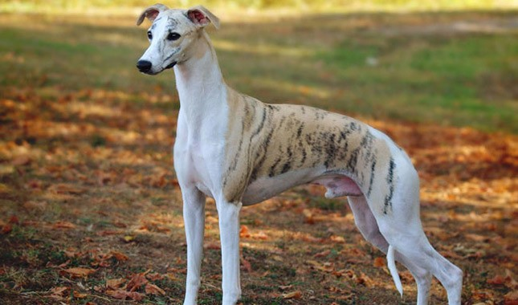

Not Your Common Pup
Context
How can I know which dog should I get?
The truth is... I love dogs. I was able to convince my parents to let me adopt my first puppy, Oreo, when I was 9 years
old. Now that I'm in college and Oreo is back home, I've been wanting to get another dog.
Many times, I've done quizzes
to find a breed that would better match my needs and the problem is that, depending on the site, the answers vary, making
the decision way harder. Thus,
I decided to create an app where people can scroll through cards showing different dogs and immediately discover basic
information about them. Additionally, I added some filtering and sorting options to make the search even faster.
Meet the puppies
Do you want a large, very energetic dog, or a small couch potato?
Finding a dog companion that matches your needs is harder than it seems. Dogs, depending on their breed, have certain
characteristics that, if a person does not know before getting the dog, probably their personalities will mismatch :(.
Thus, I wanted to create an application to show dog breeds that are less common, so that users can discover them and learn
some information about them, like their size, exercise needs, and average price in the U.S. market.
If a user wants to do some research before purchasing a dog, this application can help them easily scroll through less
common dog breeds and find the relevant information to discover if this breed is the right fit for them. Additionally,
if a user already knows what size, exercise needs, and budget better match with them, the filtering + sorting options
will make the search even easier.
These are some of the dogs that you can find in my application:

From left to right, the breeds are Irish Setter (hair perfect for a Pantene commercial), Whippet (very cool color), and Harrier
(like a larger version of a Beagle).
Click
here
to check out the application!
Usability Principles & Design Choices
- I included a Navigation Bar at the top of the page to increase visibility of filtering and sorting options. Additionally,
users can access their cart from the navbar, by clicking the "Your Pup Cart" button. This improves usability as it is faster
than scrolling.
- Users have the option to filter by size and exercise needs, and to sort by price either from highest to lowest or from lowest
to highest. Given the information displayed, these were the most intuitive filters.
- To increase memorability and learnability, every dog is displayed in an identical card with the following information: an image
of the dog, the name of the breed, their size (large, medium, or large), the amount of exercise the dog requires (low, medium, high),
price, and a button to add the dog to your cart if you like the breed.
- The cart cards are very similar, with the difference that it has +/- buttons to increase and reduce the quantity of a dog from a
breed and an option to remove the card from the cart.
- Lastly, for good readability, my application has a minimalistic design with a lot of white space and a turquoise color for the
navbar, the buttons, and the cart title.

Takeaways
I'm really happy that I could create an application that is useful for dog lovers like me.
Designing the cart was definitely the most challenging part when using React for the first time,
but it was super fun to be able to explore my creativity while displaying information about a topic I like and
learning useful skills that I will continue to apply in my user interface design journey. I hope you liked it!
If you want to take a look at the code,
here
is the link to my GitHub repo.
Sources:
- animalplanet.com
- akc.org
- vetstreet.com
- doglime.com